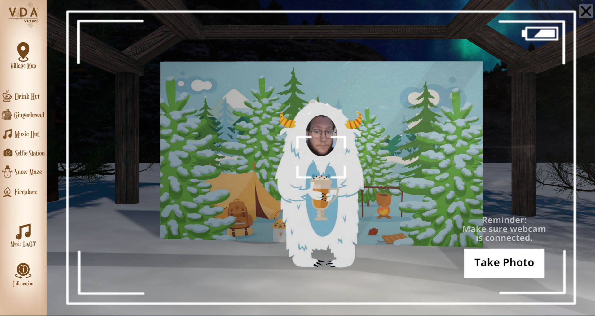
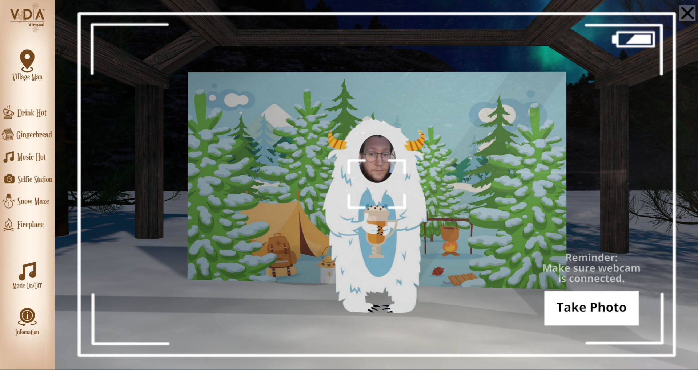
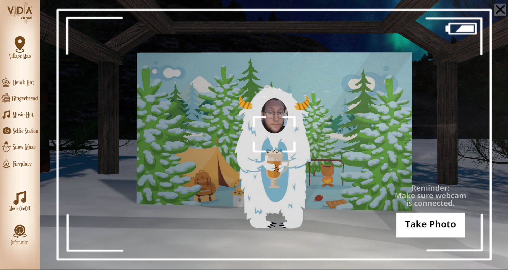
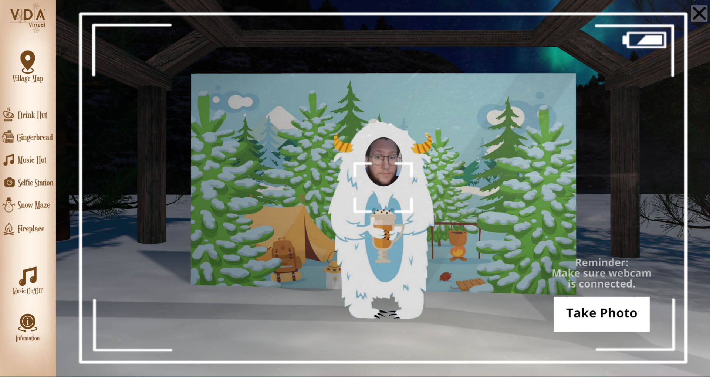

February
2023
Mobilize Solutions - Winter Experiences Hub
Mobilize Solutions, a company out of Irvine Calirfornia, was looking to expand their product offerings. Alongside one of their AR Designers, I helped design and develop a web page hub, which housed three unique, winter themed AR experiences.
To create these experiences, I primarily utilized 8th Wall, a cloud based AR development platform, which under the hood also uses libraries/frameworks such as A-Frame & Three.js. All other UI elements, such as the main hub web page and each experience's UI's were created with vanilla HTML, CSS, and JavaScript. Each of these projects involved many of my own custom solutions, created with JavaScript and 8th Wall's API tools, for items such as the camera capture buttons, carousel selectors, and of course the snowball throwing! :D
Although Starbucks branding was used, this was simply for sake of demonstration, to help potential clients understand the full branding opportunity. Neither Mobilize, nor myself had any affiliation with Starbucks for this project. Any Starbucks branding is used for branding demonstration purposes only.
Scituate Podiatry Group's website had been in need of a design revamp for some time. We agreed that alongside this site update, it also made sense to build everything on a simpler, more popular, and better supported platform such as Wordpress.
So, for Scituate Podiatry Group, not only did I take an existing Wordpress theme and drastically customize the design to their needs, but I was also able to provide photography services to get updated imageryi and headshots for the site to help create a warmer and more welcoming first impression for new and recurring patients visiting the site.
For this redesign, we wanted to streamline the process for new and returning patients, and get them to the information they needed, as seamlessly as possible, with a simple, elegant, and responsive UI design.
January
2023
September
2022
While working at VDA inc. I was able to help create a historical timeline kiosk for Merrimack College. This kiosk is currently still installed in one of their buildings for students, parents, and visitors alike to check out. The kiosk acted as a virtual timeline where users could scroll through the years of Merrimack's history and find fun information and interactive experiences.
For this project, I was in charge of the front-end design & development of the virtual component, while the rest of the team created the actual physical kiosk and design.
To create this timeline experience, I utilized my knowledge of HTML, CSS, and JavaScript once again to create a custom solution and user-interface. Due to the fact that the kiosk works using two screens, a lower touchscreen which the user interacts with, and an upper larger screen where information and images are displayed, much of the work involved went into the communication between the two screens.
To communicate between each screen, I took advantage of the BroadcastChannel Web API, which allows communication between multiple tabs or windows in a browser.
While working at VDA I have helped develop and expand many of their virtual event offerings. Their virtual Winter Carnival was one of such projects that I worked on.
The VDA Winter Carnival is an interactive, virtual event page that includes many fun winter themed activities and an immersive panoramic environment.
My primary contribution to this project was in the development of the "Snow Maze" and "Selfie Station" interactive elements. Both involved working with 3D web tools to create an engaging 3-Dimensional game experience that can be played even on mobile devices.
 

 

December
2021
May
2020
During the senior year of my Computer Science degree, I worked with and also managed 3 other developers from the class to create a responsive and minimal looking road trip planning website.
Aside from leading the planning and management of the project, I worked primarily on the Front-End design and development of the pages, as well as the JavaScript that utilized the Google Maps API and ran the actual road trip planning functionality.
Note: Due to being a class project, the Google Maps API has been disconnected and the road trip planner portion is no longer functional.


Tilt is a fun and addictive mobile game which I solo-developed using Unity3D and coded with C#.
Being the 3rd app I have developed, Tilt is a clean, minimal mobile game that requires only a single finger to play, while still providing a challenging experience that is difficult to put down.
Note: Tilt is unfortunately no longer available on the Google Play Store.